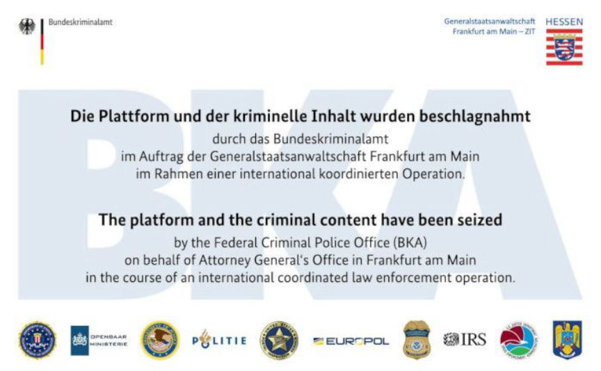
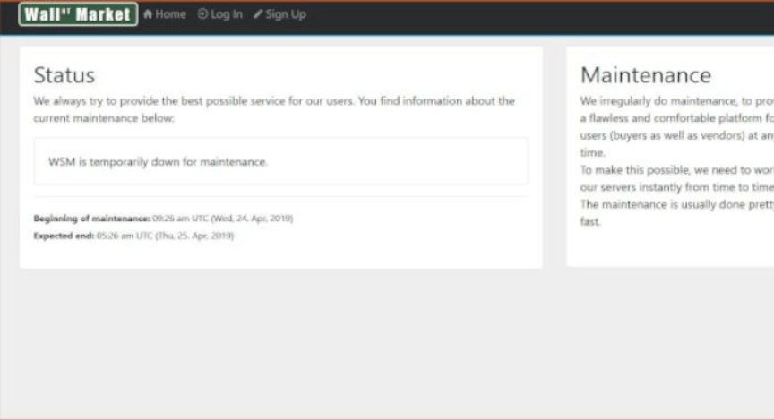
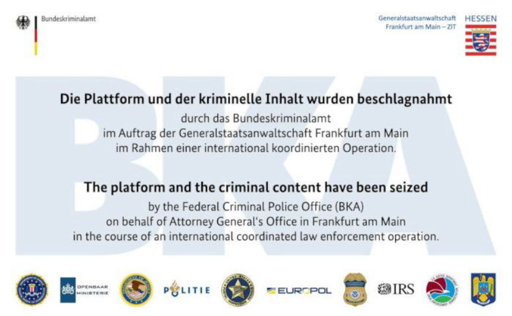
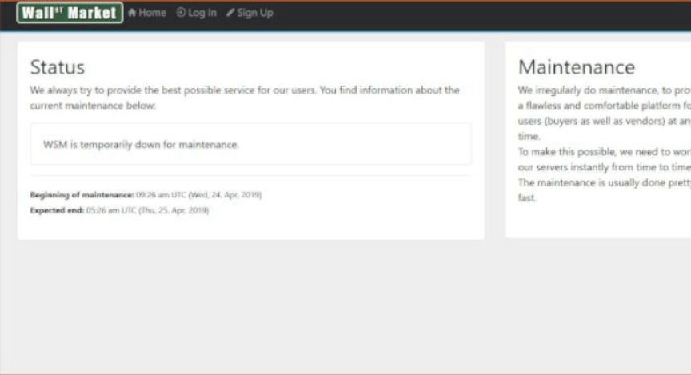

German Law Enforcement Seized Wallstreet Market
~2 min read | Published on 2019-05-02, tagged Darkweb-Market, General-News, Seized, Website using 260 words.
German law enforcement seized Wallstreet Market in a globally coordinated operation, according to a new seizure banner on the Wallstreet Market homepage. Europol has confirmed that a press release “worth waiting for” is coming.

The Wallstreet Market homepage, in May 2019, switched from a maintenance page to a BKA (German Federal Police) seizure banner. The maintenance changed initially after the Wallstreet Market admin had exit-scammed. It then changed to a new maintenance page, indicating to some researchers that the market would display a seizure page on the so-called maintence’s expected end date.

A NU.nl article mentions a conversation with a Europol spokesperson confirming that law enforcement had seized Wallstreet Market.
A spokesman for the European police organization Europol informed NU.nl on Thursday evening that it is currently unable to provide additional information, but that more information will be announced on Friday between 10 AM and 4 PM.
Europol collaborated with German law enforcement on the operation. One of the Wallstreet Market staff members has been identified as an individual living in Germany.
A spokesperson for the National Unit tells NU.nl on Thursday evening that the Dutch police have cooperated with the German authorities to take over the site. Details of how they proceeded are made clear on Friday afternoon.
“It is worth waiting for the press release”
In addition to the Dutch police, Europol also informed NU.nl that more information will be announced on Friday. “It is worth waiting for the press release,” said the spokesperson. The OM only referred the questions to the Dutch police for questions.
Is Dream Market next?

Wallstreet Market Seizure Banner
The Wallstreet Market homepage, in May 2019, switched from a maintenance page to a BKA (German Federal Police) seizure banner. The maintenance changed initially after the Wallstreet Market admin had exit-scammed. It then changed to a new maintenance page, indicating to some researchers that the market would display a seizure page on the so-called maintence’s expected end date.

Wallstreet Market Status Page
A NU.nl article mentions a conversation with a Europol spokesperson confirming that law enforcement had seized Wallstreet Market.
A spokesman for the European police organization Europol informed NU.nl on Thursday evening that it is currently unable to provide additional information, but that more information will be announced on Friday between 10 AM and 4 PM.
Europol collaborated with German law enforcement on the operation. One of the Wallstreet Market staff members has been identified as an individual living in Germany.
A spokesperson for the National Unit tells NU.nl on Thursday evening that the Dutch police have cooperated with the German authorities to take over the site. Details of how they proceeded are made clear on Friday afternoon.
“It is worth waiting for the press release”
In addition to the Dutch police, Europol also informed NU.nl that more information will be announced on Friday. “It is worth waiting for the press release,” said the spokesperson. The OM only referred the questions to the Dutch police for questions.
Is Dream Market next?